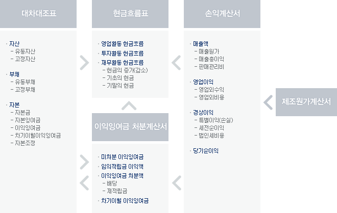
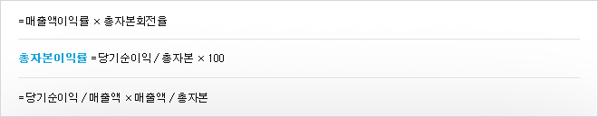

주식교실 ㅣ 기본적분석
질적 분석이란 개별기업이 고유하게 갖고 있는 질적인 특성, 즉 기업의 연혁, 경영자의 능력, 경영전략, 노하우, 등을 분석하는 것을 의미함. 그러나 이 평가는 주관적이기 때문에 투자자가 공통의 기준을 모든 기업에 적용하여 평가하는 것이 바람직합니다.
모든 기업은 일정한 기간 동안에 자산의 변동과 경영성과를 파악하는 것을 목적으로 정해진 회계기준에 따라 매기간마다 재무제표를 작성하여 기업외부에 공시하여야 한다. 재무제표는 대차대조표(balance sheet), 손익계산서(income statement), 이익잉여금처분계산서(statement of retained earning), 현금흐름표(statement of cash flow) 등으로 구성됩니다.
일정 시점에서 현재 기업이 보유하고 있는 자산의 현황을 파악하기 위해 작성하는 회계장부로서, 자산, 부채, 자본의 3항목으로 구성됨. 대차대조표를 통해 투자자는 기업 재무상태의 건전성에 관한 정보를 얻을 수 있음. 기업의 자산과 부채 자본에 대한 내용을 일정한 형식의 도표로 나타내는 것을 대차대조표라고 하는데 기업의 건전성, 가치, 재무상태를 요약하여 보여준다. 대차대조표의 형식은 계정식(차변과 대변으로 구분하여 표시함)과 보고식(전기와 본기의 내용을 나열하는 형식)으로 나눈다.
자산계정
현금, 건물, 토지 등 기업이 소유하고 있는 물건 및 권리로서 금전적 가치가 있는 것을 자산이라고 한다. 기업의 자산은 크게 유동자산과 고정자산으로 구분한다.
- 유동자산 : 현금과 1년 내에 현금화나 소비될 것으로 예측되는 재화들로 당좌자산과 재고자산으로 분류한다.
- 당좌자산
- 현금 및 현금등가물 : 현금, 자기앞 자기앞수표, 전신환증서, 당좌예금, 보통 예금 등과 단시간 내에 현금으로 전환이 용이하고 가치변동의 위험이 적으며 3개 월 이내 현금으로 전환되는 유가증권 등이 모두 포함된다.
- 단기금융상품 : 정기예금, 정기적금 및 기타 정형화된 상품 등으로 단기적 자금운용목적으로 소유하거나 기한이 1년 내에 도래하는 것을 포함한다.
- 유가증권 : 기업의 일시적인 여유자금이나 투자목적으로 구입하는 유가증권으 로 증권, 국채, 공채 등을 포함한다.
- 단기성 매출채권 : 외상매출금, 받을 어음 등
- 단기성 대여금, 이연법인세차
- 기타
- 재고자산
- 기업이 영업활동을 통해 판매하려고 구입한 자산을 말한다.
- 상품, 제품, 반제품, 재공품, 원재료, 저장품, 미착상품, 위탁매출, 할부 매출 등
- 기타
부채계정
기업이 타인이나 타법인으로부터 빌린 자금 즉 빚을 부채라고 하며 미래에 상환하여야 하는 의무가 있다. 부채도 유동부채와 고정부채로 크게 구분된다.
- 유동부채
- 매입채무, 단기 차입금 등 1년 이내에 상환하여야 할 의무가 있는 빚을 말한다. 외상 매입금, 지급어음, 금융어음, 단기 차입금, 선수금, 미지급금, 예수금 등이 포함된다.
- 고정부채
- 원금의 상환이 1년 이상인 장기성 부채를 말하며, 사채, 장기 차입금, 장기성 매입채무, 장기 부채성 충당금, 이연법인세대 등을 포함한다.
자본계정
기업이 설립시의 출자금, 이익으로부터 자본으로 전환된 금액 등 부채 이외에 기업의 자산으로 조달된 금액이다. 자본, 자본잉여금, 이익잉여금, 자본조정 등으로 구분된다.
- 자본금
- 기업이 설립할 때 출자금이나 설립 후 증액한 자본금을 포함한다.
- 자본잉여금
- 자본을 모집할 때 액면가 보다 주식가격이 시장에서 더 비싸게 팔려 기업에 들어온 자금 등 자본거래로 인하여 발생한 잉여금을 말한다. 자본잉여금은 자본금으로의 전입이나 이월결손금의 전보에만 사용할 수 있다. 주식발행초과금, 감자차익, 자기주식처분이익 등이 포함된다.
- 이익 잉여금
- 기업이 영업활동으로 얻은 순이익 중에서 자본적 성격으로 기업에 축적된 잉여금을 말하는 것으로 이익준비금, 기타 법정 적립금, 임의 적립금, 이월이익 잉여금 또는 이월 결손금 등이다.
- 자본조정
- 과목의 특성상 자본에서 차감하거나 가산하여야 할 성격이지만 아직 그 내용이 확정되지 않았거나 자본과 부채의 양면적 성격을 갖고 있는 임시적 성격의 항목들이다. 주식할인발행차금, 배당건설이자, 자기주식, 미교부 주식배당금, 투자유가증권평가이익(손실) 등이 있다.
일정 기간 동안 기업의 경영활동 성과를 파악하기 위해 일정기간(1회계기간) 의 영업성적을 일정한 형식의 도표에 요약하여 작성하는 재무제표.
기업의 이해관계자들은 손익계산서를 통해 해당 기업이 회기동안 어느 정도의 이익을 남겼고 회사의 운영을 어떻게 하였는지 알 수 있다.
손익계산서의 등식은 총수익-총비용 = 순이익 즉 총수익 = 총비용+순이익으로 나타낸다.
손익계산서를 통해 투자자는 기업의 매출성장률을 분석하고 미래의 수익을 예측함.
기업은 당기순이익을 재투자를 위해 회사 내에 유보하거나 주주에게 배당한다. 이익잉여금 처분계산서는 당기순이익의 사용용도를 보여주는 재무제표로 이를 통해 투자자는 기업의 배당성향과 장기적인 자금활용도를 평가할 수 있다.
일정 기간동안 기업이 영업활동에 필요한 자금을 어떻게 조달하였으며 조달한 자금의 사용처를 명확히 하기 위해 작성하는 재무제표.
이를 통해 투자자는 이익의 사용처, 배당금이 많거나 적은 원인, 유동자산이 감소하고 순이익이 증가한 이유, 기업설비자금의 조달처, 채무상환방법, 순운전자본의 조달방법 등을 알 수 있음. 기업은 당기순이익을 재투자를 위해 회사 내에 유보하거나 주주에게 배당함. 이익잉여금 처분계산서는 당기순이익의 사용용도를 보여주는 재무제표임. 이를 통해 투자자는 기업의 배당성향과 장기적인 자금활용도를 평가할 수 있음.
좀 더 쉽게 표현하자면, 매출은 많아서 손익계산상으로는 이익이 많이 창출되었음에도 실제로 기업내에는 현금이 없어서 심한 경우 지불불능의 상태에 빠지는 경우도 있다. 반대로 손익계산상으로는 결손임에도 기업 내에는 현금이 풍부할 경우도 있다. 이렇게 손익계산서상 이익과 현금이 정확히 일치되지 않는 원인을 밝혀 주는 것이 현금흐름표이다.

-
수익성 비율
- ※ 수익성 : 기업이 보유하고 있는 자산상태를 통하여 수익성을 파악함
- 총자본이익률(return of investment : ROI) : 생산활동에 투입된 자본의 운영효율성을 측정함

- 자기자본이익률(return of equity : ROE) : 타인자본을 제외한 자기자본 운영의 효율성을 측정함
자기자본이익률 = 당기순이익/자기자본x100
- 납입자본이익률 : 납입자본이란 주주들이 주식을 구입하기 위해 기업에 출자한 금액 을 뜻하며 이 비율은 납입자본에 대한 수익성(배당률)을 파악하기 위한 것임
납입자본이익률 = 당기순이익/납입자본x100
- 매출액 이익률 : 경영활동의 합리성을 파악하기 위한 것임
매출액이익률 = 당기순이익/매출액x100
- 매출영업이익률 : 당기순이익이 산출되는 과정에서 영업활동과 직접연관이 없는 비용 들을 고려하기 때문에 매출액이익률로는 기업 영업활동의 효율성을 평가하기 어려움. 따라서 매출액영업이익률로서 영업활동의 효율성을 평가하는 것이 보다 합리적임
매출액영업이익률 = 영업이익/매출액x100
-
성장성 비율
- ※ 성장성 : 기업의 성장성을 파악하기 위해 작성되는 지표
- 매출액 증가율 : 전년도 대비 당해 년도 매출액 증가율을 평가하는 지표. 이 지표는 동종산업의 평균매출액증가율과 비교하여 시장점유율의 변동을 분석하는 것이 병행되어야 함
매출액증가율 = (당기매출액-전기매출액)/전기매출액x100
- 총자산증가율 : 일정기간 동안 기업의 규모가 얼마나 성장했는지 파악하기 위한 지표
총자산증가율 = (당기말총자산-전기말총자산)/전기말총자산x100
- 영업이익증가율 : 영업활동의 성장률을 파악하기 위한 지표
영업이익증가율 = (당기 영업이익-전기영업이익)/전기 영업이익x100
-
안정성 비율
- ※ 안정성 : 기업의 안정성은 부채상환능력과 경기변동에 대한 대처능력으로 평가함
- 유동비율 : 기업의 단기채무능력을 측정하기 위한 비율. 유동자산이란 대차대조표일로부터 1년 이내에 소비되거나 현금화될 수 있는 자산을 의미하며 유동부채란 대차대조표일로부터 1년 이내에 청산 또는 상환될 채무를 말함
유동비율 = 유동자산/유동부채x100
- 부채비율 : 자본구성의 건전성을 평가하기 위한 지표
부채비율 = 타인자본/자기자본x100
- 고정비율 : 자본사용의 적절성을 평가하기 위한 지표로서, 고정자산은 자기자본으로 조달해야 한다는 관점에서 평가하는 지표임
고정비율 = 고정자산/자기자본x100
-
활동성 비율
- ※ 활동성 : 기업의 자산활용정도를 파악하기 위한 분석으로서, 손익계산서의 매출액을 대차대조표 항목들로 나누어 측정함
- 총자산회전률(total asset turnover ratio) : 매출활동 과정에서 기업의 보유자산이 몇 번이나 활용되었는지 파악하기 위해 측정함
총자산회전율 = 매출액/총자산x100
- 고정자산회전율 : 매출활동 과정에서 기업의 고정자산이 몇 번이나 활용되었는지 파악 하기 위해 측정함
고정자산회전율 = 매출액/고정자산x100
- 재고자산회전율 : 재고자산이란 기업이 판매를 목적으로 하는 자산을 의미하는 것으로서, 재고자산의 판매활동의 원활함을 측정함
재고자산회전율 = 매출액/재고자산x100